Logistic Classification
This tour details the logistic classification method (for 2 classes and multi-classes).
Contents
Warning: Logisitic classification is actually called "logistic regression" in the literature, but it is in fact a classification method.
We recommend that after doing this Numerical Tours, you apply it to your own data, for instance using a dataset from LibSVM.
Disclaimer: these machine learning tours are intended to be overly-simplistic implementations and applications of baseline machine learning methods. For more advanced uses and implementations, we recommend to use a state-of-the-art library, the most well known being Scikit-Learn
Installing toolboxes and setting up the path.
You need to download the following files: general toolbox.
You need to unzip these toolboxes in your working directory, so that you have toolbox_general in your directory.
For Scilab user: you must replace the Matlab comment '%' by its Scilab counterpart '//'.
Recommandation: You should create a text file named for instance numericaltour.sce (in Scilab) or numericaltour.m (in Matlab) to write all the Scilab/Matlab command you want to execute. Then, simply run exec('numericaltour.sce'); (in Scilab) or numericaltour; (in Matlab) to run the commands.
Execute this line only if you are using Matlab.
getd = @(p)path(p,path); % scilab users must *not* execute this
Then you can add the toolboxes to the path.
getd('toolbox_general/');
Dataset Loading
We load a dataset of \(p\) images of size \(n = 8 \times 8\), representing digits from 0 to 9 (so there are \(k=10\) classes).
First define a few helpers.
SetAR = @(ar)set(gca, 'PlotBoxAspectRatio', [1 ar 1], 'FontSize', 20); Xm = @(X)X-repmat(mean(X,1), [size(X,1) 1]); Cov = @(X)Xm(X)'*Xm(X);
Load the dataset.
name = 'digits'; load(['ml-' name]);
Randomly permute it.
A = A(randperm(size(A,1)),:);
Separate the features \(X\) from the data \(y\) to predict information.
X = A(:,1:end-1); y = A(:,end); y = y-min(y)+1; k = max(y);
\(p\) is the number of samples, \(n\) is the dimensionality of the features,
[p,n] = size(X);
Display a few samples digits
q = 5; clf; for i=1:k I = find(y==i); for j=1:q f = reshape(X(I(j),:), sqrt(n)*[1 1])'; subplot(q,k, (j-1)*k+i ); imagesc(-f); axis image; axis off; end end colormap gray(256);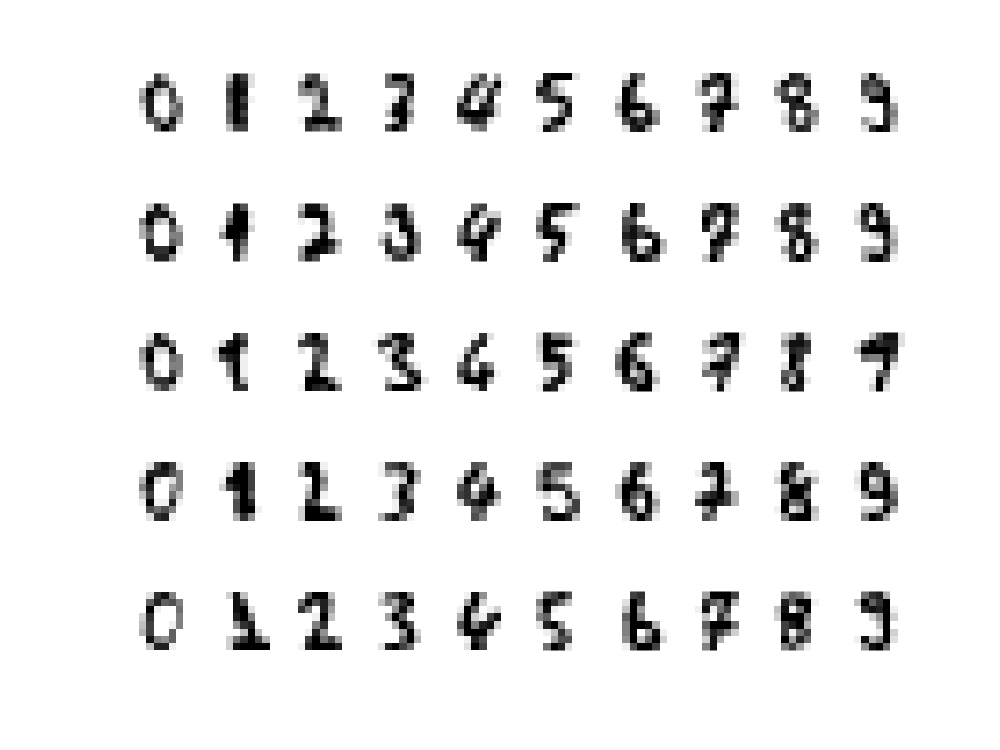
Dimenionality Reduction and PCA
In order to display in 2D or 3D the data, dimensionality is needed. The simplest method is the principal component analysis, which perform an orthogonal linear projection on the principal axsis (eigenvector) of the covariance matrix.
Display the covariance matrix \(C \in \RR^{n \times n}\).
clf; imagesc( Cov(X) );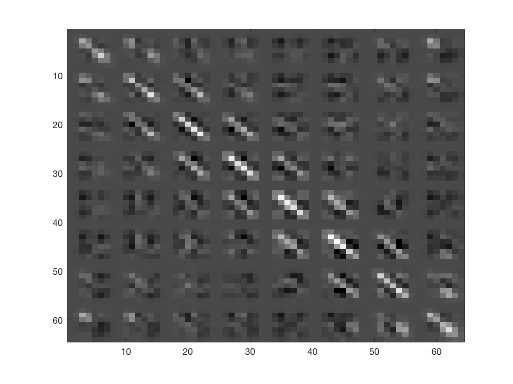
Compute PCA ortho-basis.
[U,D,V] = svd(Xm(X),'econ');
Compute the feature in the PCA basis.
Z = Xm(X) * V;
Plot sqrt of the eigenvalues.
clf; plot(diag(D), '.-', 'LineWidth', 2, 'MarkerSize', 30); axis tight; SetAR(1/2);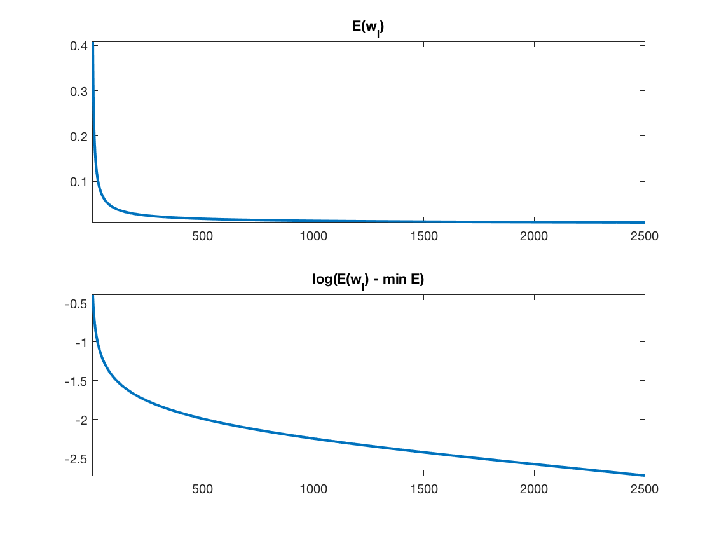
Display in 2D.
col = [ [1 0 0]; [0 1 0]; [0 0 1]; [0 0 0]; [0 1 1]; [1 0 1]; [1 1 0]; ... [1 .5 .5]; [.5 1 .5]; [.5 .5 1] ]'; ms = 25; clf; hold on; lgd = {}; for i=1:min(k,size(col,2)) I = find(y==i); plot(Z(I,1), Z(I,2), '.', 'Color', col(:,i), 'MarkerSize', ms); lgd{end+1} = num2str(i); end axis tight; axis equal; box on; legend(lgd, 'Location', 'EastOutside'); SetAR(1);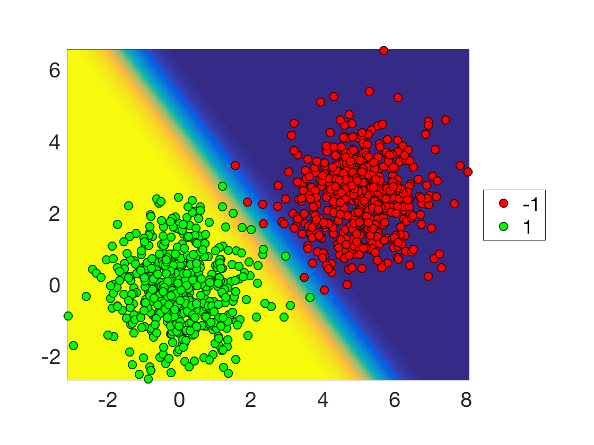
Display in 3D.
col = [ [1 0 0]; [0 1 0]; [0 0 1]; [0 0 0]; [0 1 1]; [1 0 1]; [1 1 0]; ... [1 .5 .5]; [.5 1 .5]; [.5 .5 1] ]'; ms = 25; clf; hold on; lgd = {}; for i=1:min(k,size(col,2)) I = find(y==i); plot3(Z(I,1), Z(I,2), Z(I,3), '.', 'Color', col(:,i), 'MarkerSize', ms); lgd{end+1} = num2str(i); end axis tight; axis equal; box on; view(3) legend(lgd, 'Location', 'EastOutside'); SetAR(1);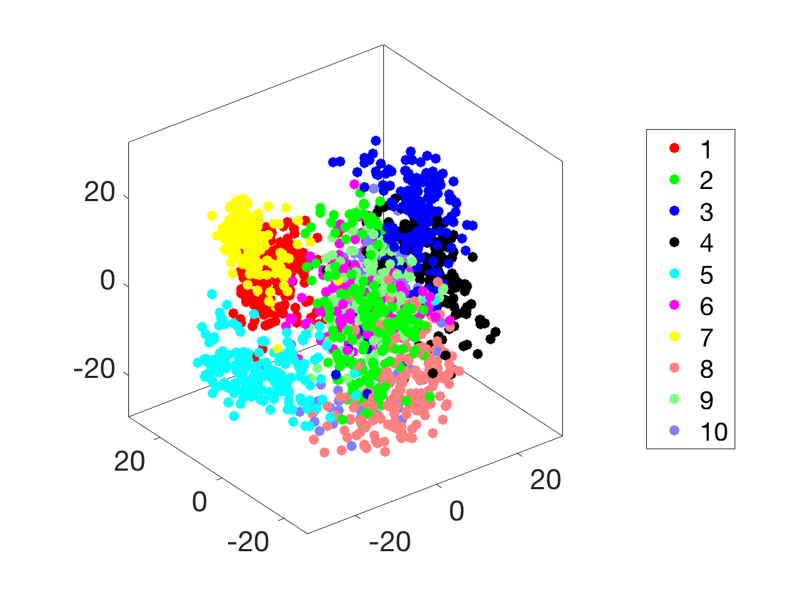
Two Classes Logistic Classification
Logistic classification is, with support vector machine (SVM), the baseline method to perform classification. Its main advantage over SVM is that is is a smooth minimization problem, and that it also output class probabity, offering a probabilistic interpretation of the classification.
Select only two classes. Here classes indexes are set to \(y_i \in \{-1,1\}\) to simplify the equations.
c = [1 2]; % selected classes c = [1 6]; Xsvg = X; ysvg = y; X = []; y = []; for i=1:2 I = find(ysvg==c(i)); X = [X; Xsvg(I,:)]; y = [y; ones(length(I),1)*(2*i-3)]; end p = size(X,1);
Plot only the two classes.
[U,D,V] = svd(Xm(X),'econ'); Z = Xm(X) * V; clf; hold on; lgd = {}; for i=1:2 I = find(y==2*i-3); plot(Z(I,1), Z(I,2), '.', 'Color', col(:,i), 'MarkerSize', ms); lgd{end+1} = num2str(c(i)); end axis tight; axis equal; box on; legend(lgd, 'Location', 'EastOutside'); SetAR(1);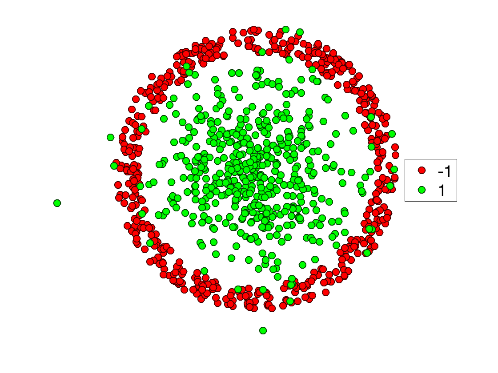
Logistic classification minimize a logistic loss in place of the usual \(\ell^2\) loss for regression \[ \umin{w} E(w) \eqdef \frac{1}{p} \sum_{i=1}^p L(\dotp{x_i}{w},y_i) \] where the logistic loss reads \[ L( s,y ) \eqdef \log( 1+\exp(-sy) ) \] This corresponds to a smooth convex minimization. If \(X\) is injective, this is also strictly convex, hence it has a single global minimum.
Compare the binary (ideal) 0-1 loss, the logistic loss and the hinge loss (the one used for SVM).
t = linspace(-3,3,255)'; clf; plot(t, [t>0, log(1+exp(t)), max(t,0)], 'LineWidth', 2 ); axis tight; legend('Binary', 'Logistic', 'Hinge', 'Location', 'NorthWest'); SetAR(1/2);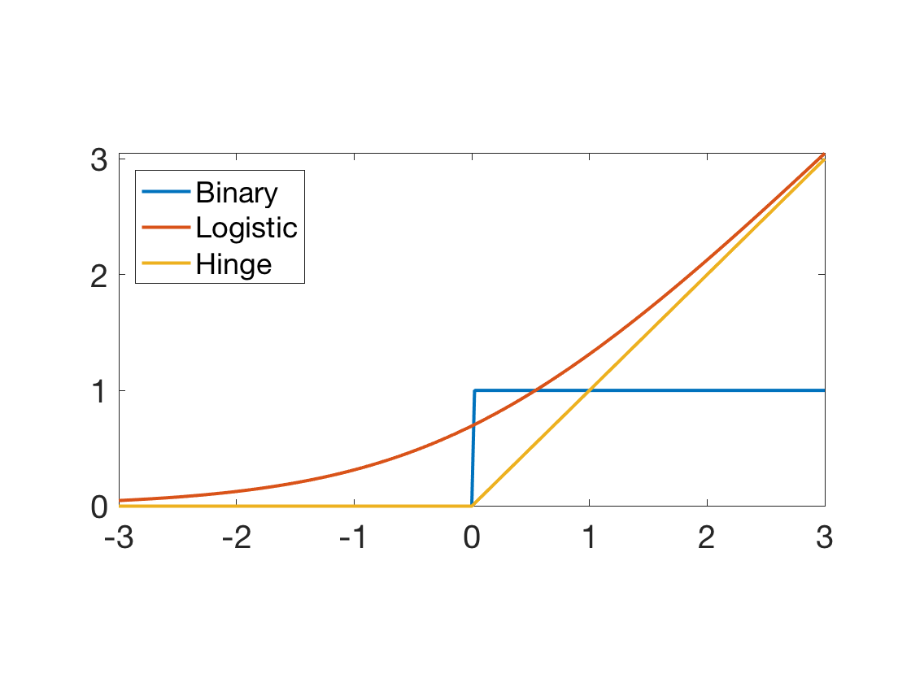
This can be interpreted as a maximum likelihood estimator when one models the probability of belonging to the two classes for sample \(x_i\) as \[ h(x_i) \eqdef (\th(x_i),1-\th(x_i)) \qwhereq \th(s) \eqdef \frac{e^{s}}{1+e^s} = (1+e^{-s})^{-1} \]
Re-writting the energy to minimize \[ E(w) = \Ll(X w,y) \qwhereq \Ll(s,y)= \frac{1}{p} \sum_i L(s_i,y_i), \] its gradient reads \[ \nabla E(w) = X^\top \nabla \Ll(X w,y) \qwhereq \nabla \Ll(s,y) = \frac{y}{p} \odot \th(-y \odot s), \] where \(\odot\) is the pointwise multiplication operator, i.e. .* in Matlab.
Define the energies.
L = @(s,y)1/p * sum( log( 1 + exp(-s.*y) ) ); E = @(w)L(X*w,y);
Define their gradients.
theta = @(v)exp(-v) ./ (1+exp(-v)); nablaL = @(s,r)- 1/p * y.* theta(s.*y); nablaE = @(w)X'*nablaL(X*w,y);
Exercice 1: (check the solution) Implement a gradient descent \[ w_{\ell+1} = w_\ell - \tau_\ell \nabla E(w_\ell). \] Monitor the energy decay. Test different step size, and compare with the theory (in particular plot in log domain to illustrate the linear rate).
exo1;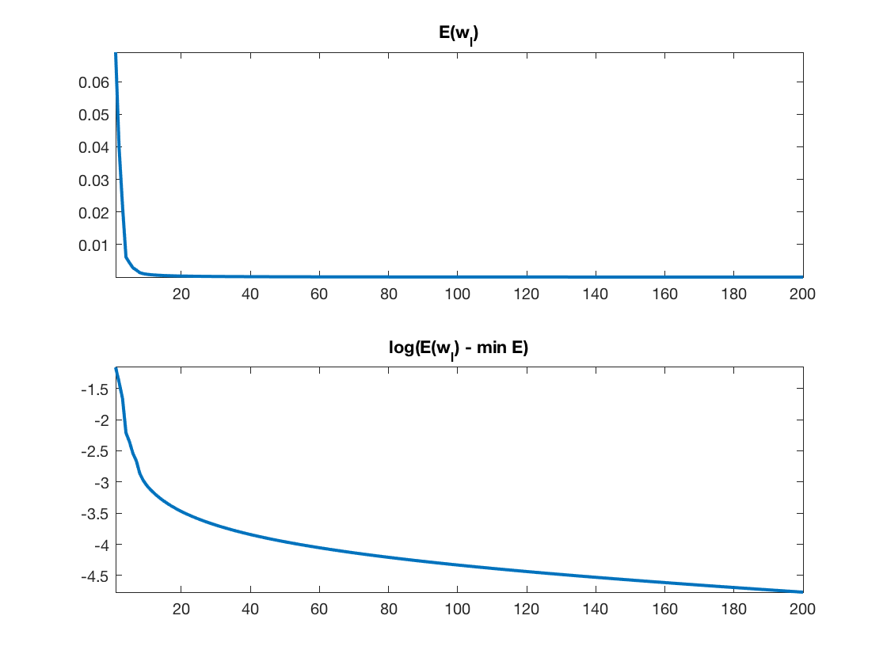
Display the weight vector \(w\).
clf; imagesc(reshape(w,sqrt(n)*[1 1])'); axis image; axis off; colormap jet(256); colorbar;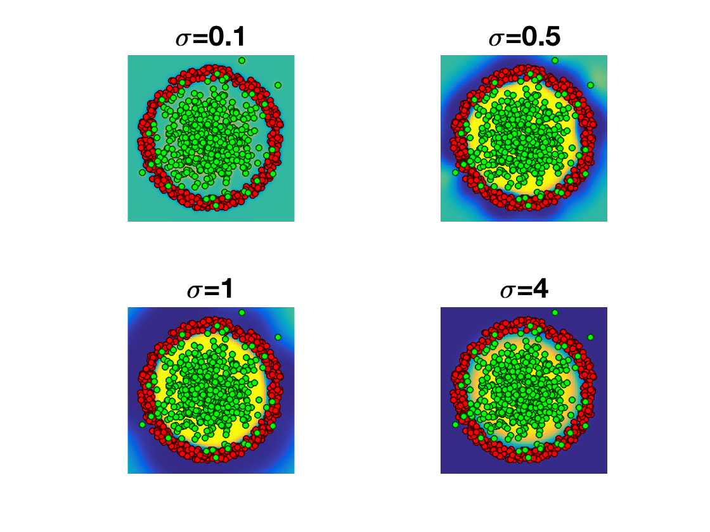
Generate a 2D grid of points over PCA space and map it to feature space.
M = max(abs(Z(:))); q = 101; t = linspace(-M,M,q); [B,A] = meshgrid(t,t); G = zeros(q*q,n); G(:,1:2) = [A(:), B(:)]; G = G*V' + repmat( mean(X,1), [q*q 1] );
Evaluate class probability associated to weight vectors on this grid.
Theta = theta(G*w); Theta = reshape(Theta, [q q]);
Display the data overlaid on top of the classification probability, this highlight the separating hyperplane?\( \enscond{x}{\dotp{w}{x}=0} \).
clf; hold on; imagesc(t,t, Theta'); lgd = {}; for i=1:2 I = find(y==2*i-3); plot(Z(I,1), Z(I,2), '.', 'Color', col(:,i), 'MarkerSize', ms); lgd{end+1} = num2str(c(i)); end axis tight; axis equal; box on; legend(lgd); SetAR(1);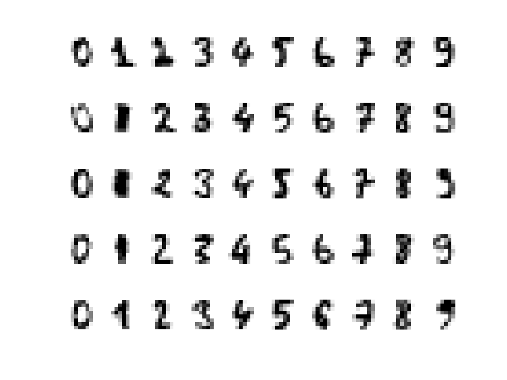
Kernelized Logistic Classification
Logistic classification tries to separate the classes using a linear separating hyperplane \( \enscond{x}{\dotp{w}{x}=0}. \)
In order to generate a non-linear descision boundary, one can replace the parametric linear model by a non-linear non-parametric model, thanks to kernelization. It is non-parametric in the sense that the number of parameter grows with the number \(p\) of sample (while for the basic method, the number of parameter is \(n\). This allows in particular to generate decision boundary of arbitrary complexity.
The downside is that the numerical complexity of the method grows (at least) quadratically with \(p\).
The good news however is that thanks to the theory of reproducing kernel Hilbert spaces (RKHS), one can still compute this non-linear decision function using (almost) the same numerical algorithm.
Given a kernel \( \kappa(x,z) \in \RR \) defined for \((x,z) \in \RR^n\), the kernelized method replace the linear decision functional \(f(x) = \dotp{x}{w}\) by a sum of kernel centered on the samples \[ f_h(x) = \sum_{i=1}^n h_i k(x_i,x) \] where \(h \in \RR^p\) is the unknown vector of weight to find.
When using the linear kernel \(\kappa(x,y)=\dotp{x}{y}\), one retrieves the previously studied linear method.
Macro to compute pairwise squared Euclidean distance matrix.
distmat = @(X,Z)bsxfun(@plus,dot(X',X',1)',dot(Z',Z',1))-2*(X*Z');
The gaussian kernel is the most well known and used kernel \[ \kappa(x,y) \eqdef e^{-\frac{\norm{x-y}^2}{2\sigma^2}} . \] The bandwidth parameter \(\si>0\) is crucial and controls the locality of the model. It is typically tuned through cross validation.
sigma = 10; kappa = @(X,Z)exp( -distmat(X,Z)/(2*sigma^2) );
Once avaluated on grid points, the kernel define a matrix \[ K = (\kappa(x_i,x_j))_{i,j=1}^p \in \RR^{p \times p}. \]
K = kappa(X,X);
Valid kernels are those that gives rise to positive symmetric matrices \(K\). The linear and Gaussian kernel are valid kernel functions. Other popular kernels include the polynomial kernel \( \dotp{x}{y}^a \) for \(a \geq 1\) and the Laplacian kernel \( \exp( -\norm{x-y}^2/\si ) \).
The kernelized Logistic minimization reads \[ \umin{h} F(h) \eqdef \Ll(K h,y). \]
F = @(h)L(K*h,y); nablaF = @(h)K'*nablaL(K*h,y);
This minimization can be related to an infinite dimensional optimization problem where one minimizes directly over the function \(f\). This is shown to be equivalent to the above finite-dimenisonal optimization problem thanks to the theory of RKHS.
Exercice 2: (check the solution) Implement a gradient descent to minimize \(F(h)\). Monitor the energy decay. Test different step size, and compare with the theory.
exo2;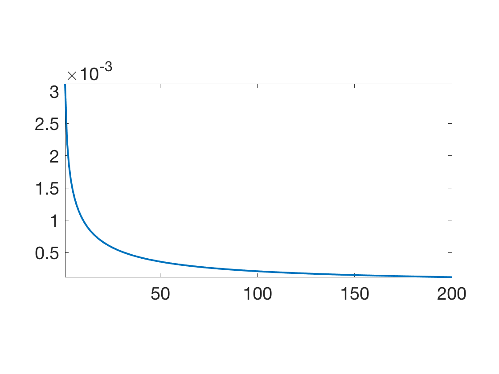
Once this optimal \(h\) has been found, class probability at a point \(x\) are obtained as \[ (\th(f_h(x)), 1-\th(f_h(x)) \] where \(f_h\) has been defined above.
We evaluate this classification probability on a grid.
Theta = theta(kappa(G,X)*h); Theta = reshape(Theta, [q,q]);
Display the classification probability.
clf; hold on; imagesc(t,t, Theta'); lgd = {}; for i=1:2 I = find(y==2*i-3); plot(Z(I,1), Z(I,2), '.', 'Color', col(:,i), 'MarkerSize', ms); lgd{end+1} = num2str(c(i)); end axis tight; axis equal; box on; legend(lgd); SetAR(1);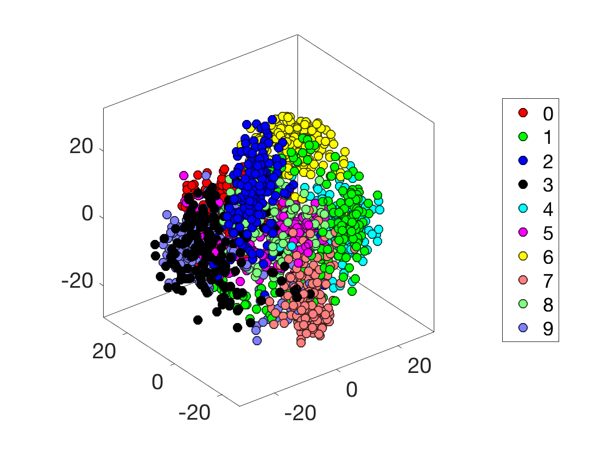
Exercice 3: (check the solution) Display evolution of the classification probability with \(\sigma\)
exo3;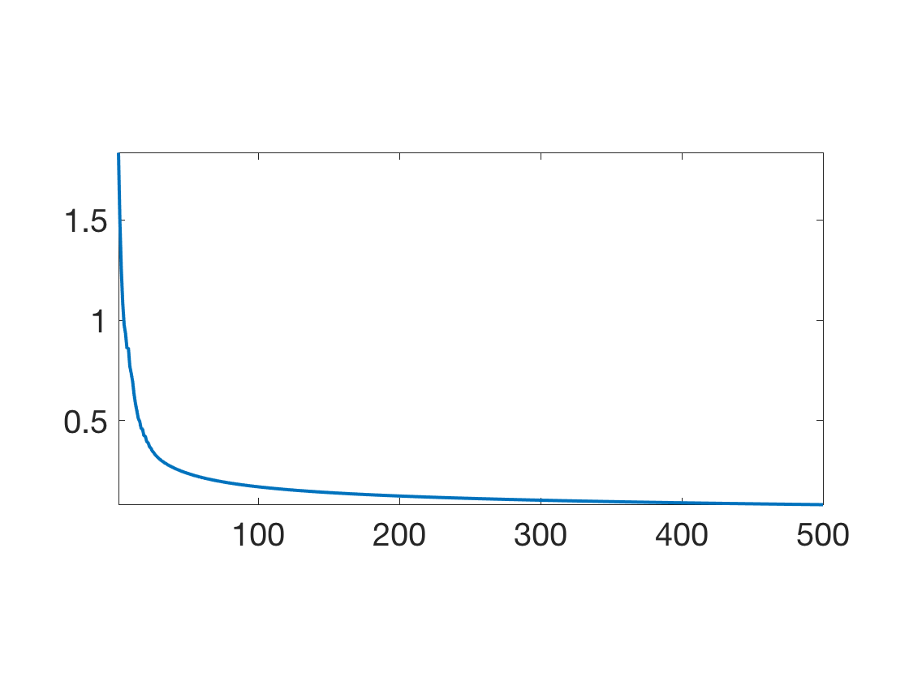
Exercice 4: (check the solution) Separate the dataset into a training set and a testing set. Evaluate the classification performance for varying \(\si\). Try to introduce regularization and minmize \[ \umin{h} F(h) \eqdef \Ll(K h,y) + \la R(h) \] where for instance \(R=\norm{\cdot}_2^2\) or \(R=\norm{\cdot}_1\).
exo4;
Multi-Classes Logistic Classification
The logistic classification method is extended to an arbitrary number \(k\) of classes by considering a familly of weight vectors \( w_\ell \)_{\ell=1}^k, which are conveniently stored as columns of matrix \(W \in \RR^{n \times k}\).
This allows to model probabilitically the belonging of a point \(x \in \RR^n \) to a the classes using an exponential model \[ h(x) = \pa{ \frac{ e^{-\dotp{x}{w_\ell}} }{ \sum_m e^{-\dotp{x}{w_m}} } }_\ell \] This vector \(h(x) \in [0,1]^k \) describes the probability of \(x\) belonging to the different classes, and \( \sum_\ell h(x)_\ell = 1 \).
The computation of \(w\) is obtained by solving a maximum likelihood estimator \[ \umax{w \in \RR^k} \frac{1}{p} \sum_{i=1}^p \log( h(x_i)_{y_i} ) \] where we recall that \(y_i \in \{1,\ldots,k\}\) is the class index of point \(x_i\).
This is conveniently rewritten as \[ \umin{w} \sum_i \text{LSE}( XW )_i - \dotp{XW}{D} \] where \(D \in \{0,1\}^{p \times k}\) is the binary class index matrices \[ D_{i,\ell} = \choice{ 1 \qifq y_i=\ell, \\ 0 \text{otherwise}. } \] and LSE is the log-sum-exp operator \[ \text{LSE}(S) = \log\pa{ \sum_\ell \exp(S_{i,\ell}) } \in \RR^p. \]
LSE = @(S)log( sum(exp(S), 2) );
The computation of LSE is unstable for large value of \(S\) (numerical overflow, producing NaN), but this can be fixed by substrating the largest element in each row, since \( \text{LSE}(S+a)=\text{LSE}(S)+a \) if \(a\) is constant along rows. This is the celebrated LSE trick.
max2 = @(S)repmat(max(S,[],2), [1 size(S,2)]); LSE = @(S)LSE( S-max2(S) ) + max(S,[],2);
The gradient of the LSE operator is the soft-max operator \[ \nabla \text{LSE}(S) = SM(S) \eqdef \pa{ \frac{ e^{S_{i,\ell}} }{ \sum_m e^{S_{i,m}} } } \]
SM = @(S)exp(S) ./ repmat( sum(exp(S),2), [1 size(S,2)]);
Similarely to the LSE, it needs to be stabilized.
SM = @(S)SM(S-max2(S));
Retrieve the full dataset (with all the classes).
X = Xsvg; y = ysvg; p = length(y);
Compute the \(D\) matrix.
D = double( repmat(1:k, [p,1]) == repmat(y, [1,k]) );
Define the energy \(E(W)\).
dotp = @(u,v)sum(u(:).*v(:)); E = @(W)1/p*( sum(LSE(X*W)) - dotp(X*W,D) );
Define its gradients \[ \nabla E(W) = \frac{1}{p} X^\top ( \text{SM}(X W) - D ). \]
nablaE = @(W)1/p * X'* ( SM(X*W) - D );
Exercice 5: (check the solution) Implement a gradient descent \[ W_{\ell+1} = W_\ell - \tau_\ell \nabla E(W_\ell). \] Monitor the energy decay.
exo5;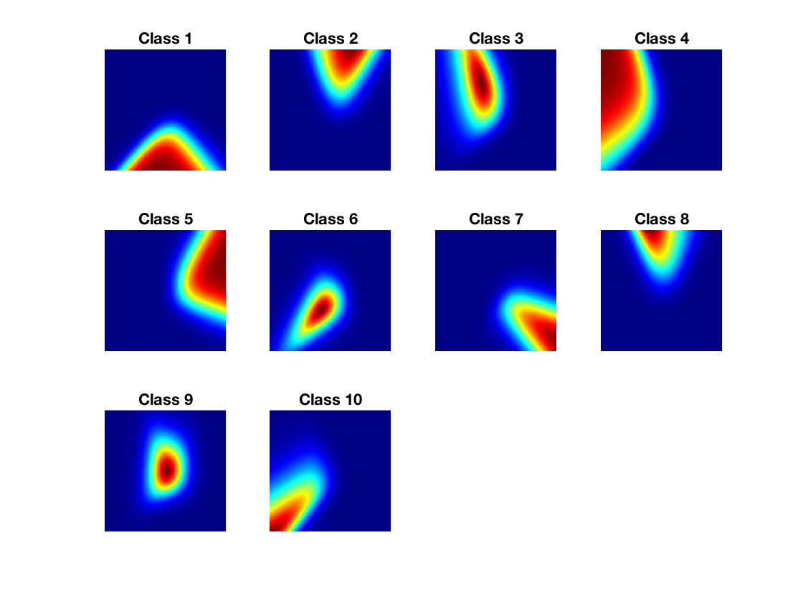
Generate a 2D grid of points over PCA space and map it to feature space.
[U,D,V] = svd(Xm(X),'econ');
Z = Xm(X) * V;
M = max(abs(Z(:)));
q = 201;
t = linspace(-M,M,q);
[B,A] = meshgrid(t,t);
G = zeros(q*q,n);
G(:,1:2) = [A(:), B(:)];
G = G*V' + repmat( mean(X,1), [q*q 1] );
Evaluate class probability associated to weight vectors on this grid.
Theta = SM(G*W); Theta = reshape(Theta, [q q k]);
Display each probablity map.
clf; for i=1:k subplot(3,4,i); imagesc(Theta(:,:,i)'); title(['Class ' num2str(i)]); axis image; axis off; colormap jet(256); end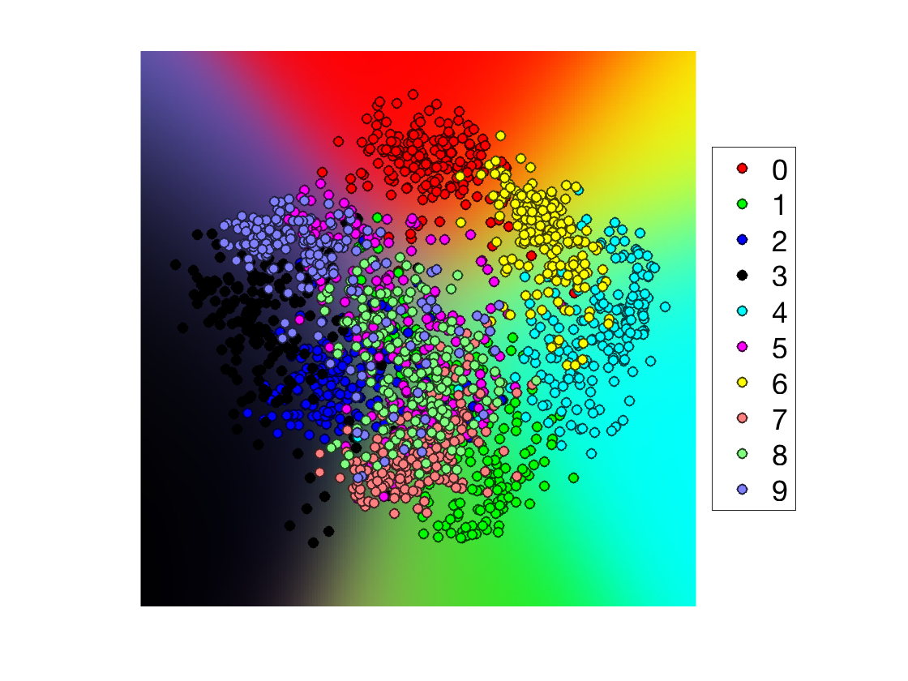
Build a single color image of this map.
R = zeros(q,q,3); for i=1:k for a=1:3 R(:,:,a) = R(:,:,a) + Theta(:,:,i) .* col(a,i); end end
Display.
clf; hold on; imagesc(t, t, permute(R, [2 1 3])); lgd = {}; for i=1:k I = find(y==i); plot(Z(I,1), Z(I,2), 'o', 'MarkerFaceColor', col(:,i), 'MarkerSize', 5, 'MarkerEdgeColor', col(:,i)/4); lgd{end+1} = num2str(i); end axis tight; axis equal; box on; legend(lgd, 'Location', 'EastOutside'); axis off; SetAR(1);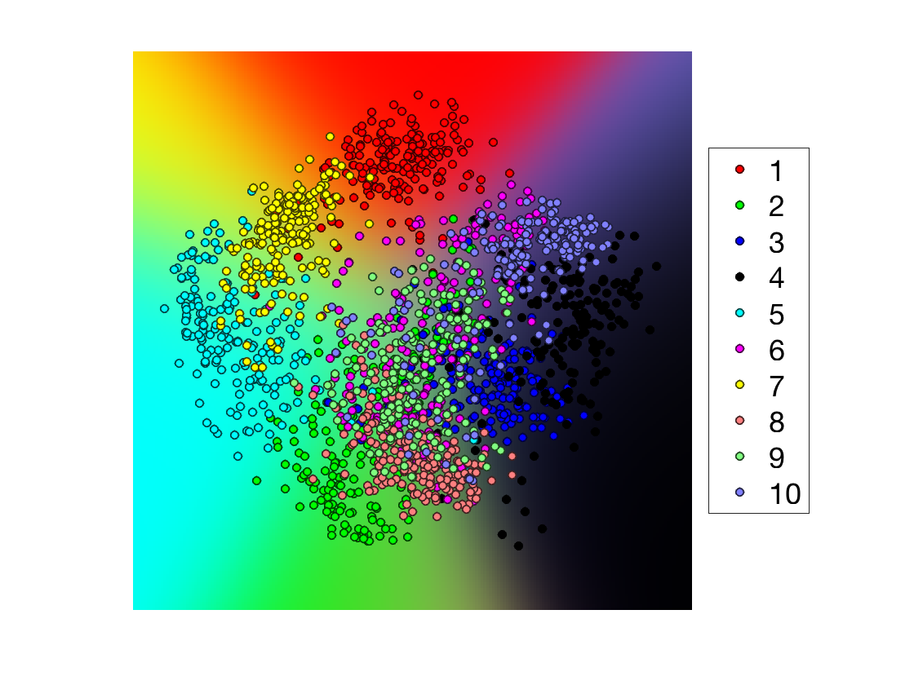
Exercice 6: (check the solution) Separate the dataset into a training set and a testing set. Evaluate the classification performance and display the confusion matrix. You can try the impact of kernlization and regularization.
exo6;